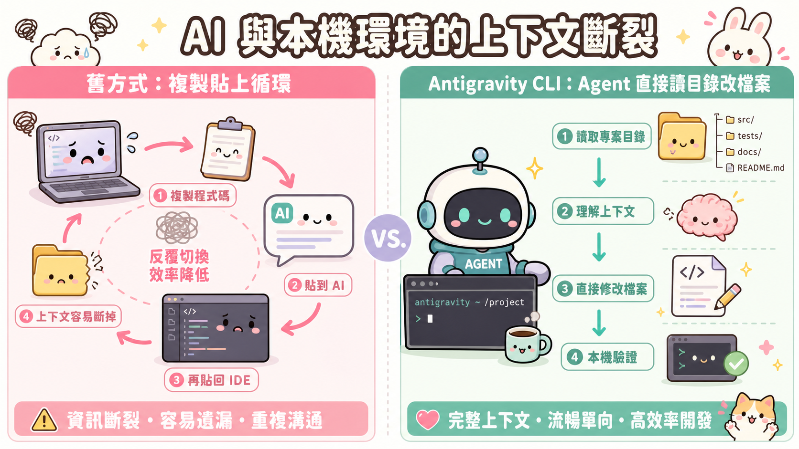
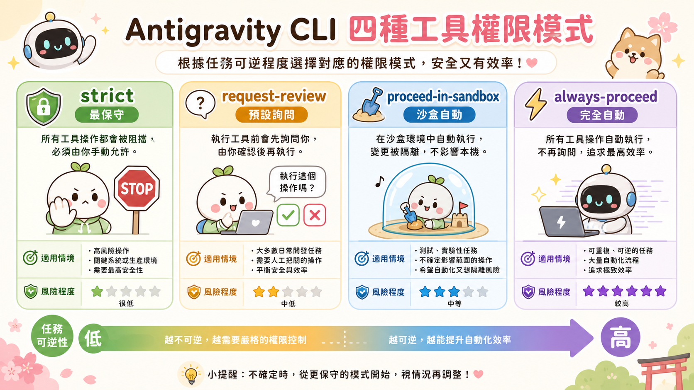
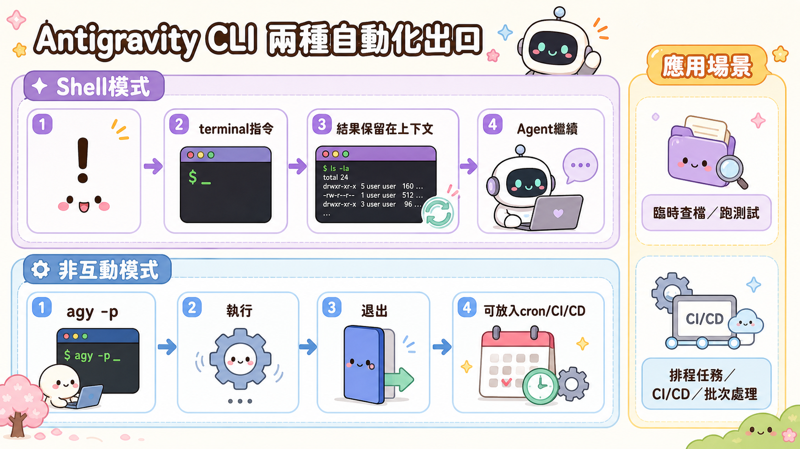

每次要讓 AI 幫你分析一個專案，你做什麼？
打開 ChatGPT 或 Gemini 的網頁，把 README.md 複製進去，把幾個關鍵函式的程式碼也貼進去，然後送出。AI 回答，你再把答案複製回終端機執行。如果有錯，再複製錯誤訊息，貼回去問。
這個流程你做了多少次？每一次「複製→貼上→複製→貼上」的迴圈，都在提醒你一件事：你沒有真正讓 AI 進入你的工作環境，你只是在兩個世界之間當人工搬運工。
當 AI 還活在玻璃後面
問題的根源不是 AI 不夠強，而是它被關在一個和你的工作完全隔離的空間裡。
你的程式碼在本機。你的日誌在本機。你的設定檔在本機。但你問 AI 的地方，是一個對你的檔案系統一無所知的網頁視窗。
這不只是不方便而已。這個隔離製造了一個根本性的上下文斷裂：AI 看到的永遠是你篩選過、手動貼過去的片段，而不是真實的工作情境。它分析的是你以為重要的部分，而不是它自己看過整個 repo 之後判斷出來的重點。
更嚴重的是，這種隔離讓 AI 沒有辦法「做事」，只能「說話」。它給你指令，你去執行。出錯了，你再回來報告。它永遠是顧問，不是隊友。

終端機裡的 Agent：不是更炫的聊天框
Antigravity CLI 想解決的就是這個斷裂。
它不是一個網頁聊天介面的命令列版本。它是一個在你的本機環境中真實運作的 Agent 介面——它能讀你的目錄、改你的檔案、執行指令，而且所有這些都發生在同一個工作空間裡，不需要你在中間搬運。
安裝完成、用 Google OAuth 登入之後，第一件事是「信任工作目錄」。這個步驟很多人會跳過不想，但它其實是整個設計的核心：你在明確告訴 Agent 它被允許操作的邊界在哪裡。這不是形式，是權限合約。
進入互動模式之後，你輸入 prompt，Agent 會推理、呼叫工具、編輯檔案，然後呈現結果——全部在你面前，全部可以被你觀察和打斷。
四個權限模式背後的工程判斷
Antigravity CLI 最值得細看的設計，是它的工具權限層級（Tool Permission Modes）：
- request-review（預設）：Agent 每次要採取行動前，都先問你。
- proceed-in-sandbox：在隔離環境中自動執行，不影響真實檔案。
- always-proceed：完全自動，不問。
- strict：最保守，只允許最低限度的操作。
這四個模式不是「信任程度」的滑桿，而是風險評估框架的具體實作。
寫一個 README 草稿？always-proceed 沒問題，最壞情況是草稿爛，重寫就好。碰到 production 的資料庫 migration 腳本？request-review 是唯一合理的選擇，因為一旦執行沒有辦法輕易還原。
真正成熟的 Agent 使用方式，不是把所有東西設成自動，而是根據任務的不可逆程度來選擇對應的模式。這個判斷能力，才是讓 AI 真正進入生產環境的關鍵。

兩個出口，打開完全不同的可能性
理解了 CLI 的基本架構之後，有兩個功能值得特別注意，因為它們代表兩種截然不同的使用維度。
Shell 模式（在提示符按 !）：讓你在同一個工作環境裡直接執行標準 terminal 指令，結果會保留在 Agent 的上下文裡。你不需要切換視窗、不需要複製輸出。Agent 看到的是連續的、完整的工作情境，而不是你挑選過的片段。
非互動模式（agy -p "prompt"）：Agent 執行完就退出，回傳結果。這讓它可以被塞進 shell script、CI/CD pipeline、或定時排程。你可以讓 Agent 每天早上自動整理昨天的 git commit、每週生成一份程式碼品質報告、或在部署前自動審查變更差異。
這個組合的意義是：Agent 不再只是你坐在電腦前才能用的工具，它可以是一個在背景定期執行任務的自動化工作者。而你需要做的，只是設計好它的工作邊界和任務描述。
這正是 Agentic Engineering 的核心轉變：你的產出不再是你自己寫的程式碼，而是你設計的、能夠生產程式碼的系統。Antigravity CLI，就是讓這件事發生在你最熟悉的工作環境裡的入口。

來源：Google Codelab「親自體驗 Antigravity CLI」
codelabs.developers.google.com/antigravity-cli-hands-on